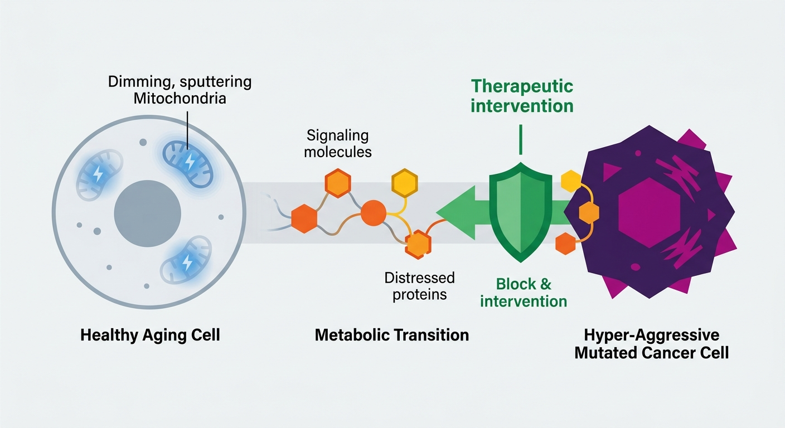

The Metabolic Blackout: How Aging Cells Lay Out a Welcome Mat for Cancer—and How to Pull It Back

For decades, oncologists and longevity researchers have operated in parallel universes, chasing what seemed like two distinct enemies. Longevity scientists focused on the slow, systemic decline of the human body—the sputtering out of cellular engines. Oncologists, meanwhile, battled a hyper-aggressive, mutated rogue agent: cancer. We knew that aging was the single greatest risk factor for cancer, but the precise molecular bridge between a cell getting old and a cell turning cancerous remained dangerously blurry.
Now, a groundbreaking study published in the journal Biology has uncovered that bridge. The research reveals that aging doesn’t just passively accumulate genetic errors; instead, it actively rewires cellular metabolism to roll out a "welcome mat" for tumors. More importantly, the researchers proved that this dangerous cellular state is not a one-way street. It is entirely reversible.
The Smart Home in a Rolling Blackout
To understand this discovery, imagine your cells as high-security smart homes. In a young cell, the power plants—the mitochondria—run at peak efficiency. They generate a vital molecular currency known as NAD+ (nicotinamide adenine dinucleotide). NAD+ is the electricity that keeps the home’s security systems, self-repair robots, and fire alarms running. If a small fire (a pre-cancerous mutation) breaks out, the security system detects it instantly and extinguishes it.
But as we age, a crisis occurs. Our mitochondrial power plants begin to decay, and our cellular power grid suffers a severe brownout. NAD+ levels plummet.
With the electricity cut, the smart home’s security systems go dark. This is what the researchers term a "tumor-permissive metabolic state." The cell isn't cancerous yet, but because its metabolic defense systems are offline, it becomes the perfect, unguarded environment for rogue, mutated cells to break in, squat, and multiply unchecked.
Inside the Cellular Sabotage
The study mapped out this sabotage in meticulous detail. When mitochondrial function drops and NAD+ levels fall, a cascade of metabolic failures triggers a desperate survival mechanism in the cell. Deprived of efficient mitochondrial energy, the cell shifts to a primitive, highly inefficient form of energy generation called glycolysis—a classic metabolic signature of aggressive cancer cells known as the Warburg Effect.
Without sufficient NAD+, crucial enzymes called sirtuins—which act as the cell's master repair technicians—are rendered inactive. DNA repair grinds to a halt. Epigenetic guards drop, allowing genes that should remain tightly locked away to be read and expressed. In short, the cell's internal environment is violently remodeled to favor survival at all costs, accidentally creating the exact metabolic breeding ground that tumors need to thrive.
Flipping the Switch: The Power of Reversibility
Until now, this slow slide into a tumor-friendly state was assumed to be an inevitable consequence of aging. But the authors of this study challenged that dogma with a stunning intervention.
By restoring NAD+ levels in metabolically compromised, aging cells, they watched the cellular power grid flicker back to life. The security systems rebooted. The cells abandoned their frantic, cancer-like glycolysis pathways and returned to healthy, oxidative mitochondrial respiration. The "tumor-permissive" welcome mat was effectively pulled back inside.
This finding transforms our understanding of preventative medicine. It suggests that we do not have to sit idly by as our cellular microenvironments decay into cancer-friendly territory. By targeting the metabolic roots of aging—specifically mitochondrial health and NAD+ abundance—we can actively fortify our tissues against oncogenesis before a tumor ever has the chance to form.
The Longevity Investment Frontier
For biotech investors and longevity scientists, this research is a paradigm-shifting validator. For years, skeptics have dismissed NAD+ restoration therapies (such as NMN, NR, or sophisticated NAD+ synthesis activators) as mere "wellness" supplements. This study elevates them to the status of high-stakes, clinically backed therapeutics at the intersection of longevity and preventative oncology.
The market potential is immense. Therapeutics that can safely restore mitochondrial efficiency and replenish the NAD+ pool represent a double-edged sword: they simultaneously extend healthspan by slowing cellular aging, while systematically reducing the body's susceptibility to its deadliest age-related disease.
We are standing on the brink of an era where we no longer just treat cancer after it arrives. Instead, we may soon keep the lights on in our cells, ensuring the security system never fails in the first place.
Sources & Citations:
Primary Source: Age-Associated NAD+ Decline and Mitochondrial Dysfunction Predispose Cells to a Reversible Tumor-Permissive Metabolic State. (Biology)
- Age-Associated NAD+ Decline and Mitochondrial Dysfunction Predispose Cells to a Reversible Tumor-Permissive Metabolic State. Biology. https://doi.org/10.3390/biology15161443